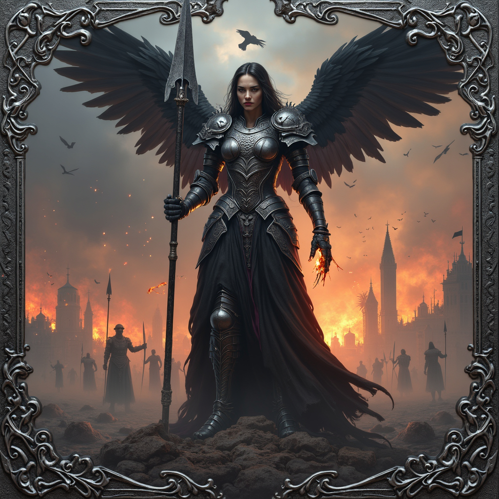

Leonarah was born daughter of Aderion Vey, a merchant-lord whose
caravans brought silk, gold, and rare ironwood across half the known world. Her childhood was gilded, her days
filled with
the music of foreign minstrels and the scent of cinnamon from far ports. But when civil war split the empire
in two, her father refused the Emperor’s summons, sending neither coin nor sword to the throne. For this defiance,
he
was executed in the public square, his body left for the carrion birds. Leonarah’s ancestral manors were seized, her
ships burned, and she herself sold into the slave pits of Virethane. There, in the blood-soaked sand, she learned
the
art of killing, rising from a nameless captive to the arena’s undefeated champion, called The Crimson Mantle for the
cloak she wore woven from her own fallen foes’ banners. Her fame grew until whispers reached the palace itself —
whispers of a warrior who fought like a storm given form. On the day she faced the Emperor in his private arena, her
spear found his heart, ending his reign. But as prophecy had long foretold, her victory demanded the price of her
life; she fell moments later, her blood mingling with his upon the marble floor. In death, the gods of strife
claimed
her, and the people began to pray to Leonarah — the mortal who defied an empire, now immortal patroness of warriors
who rise from ruin to glory.